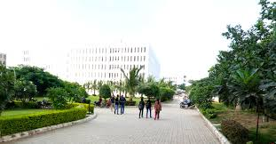

ABOUT US
G H Raisoni College of Engineering and Management is an Autonomous educational institute located in Pune, India, which is affiliated to Pune University.
Wikipedia
Address: Wagholi, Pune, Maharashtra 412207
Phone: 096047 87185
A member of Raisoni Group of Institutions (RGI),
Nagpur imparting quality education of global standards .
GHRIET has a beautiful campus located on Pune-Ahmednagar Road,15 Kms from Pune Railway Station and 8 Kms away from Pune airport.